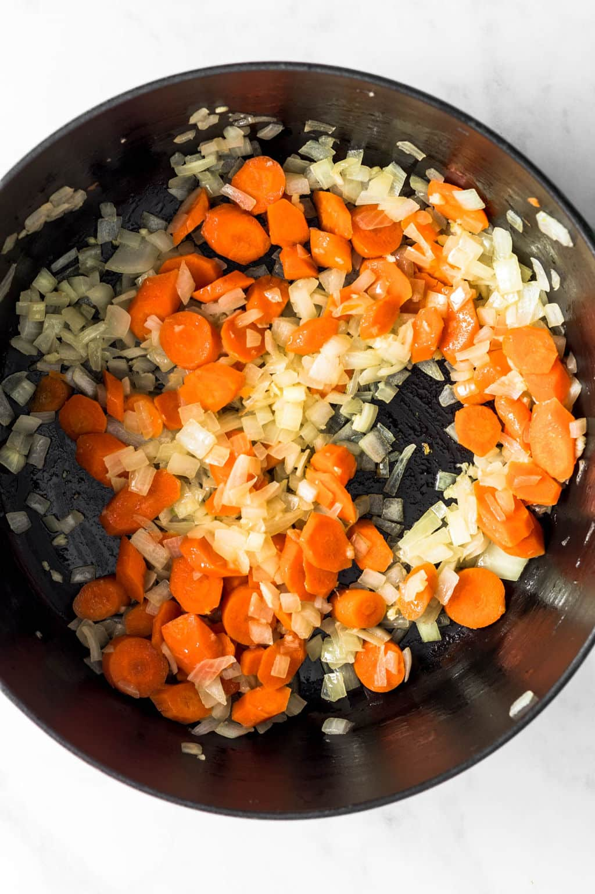
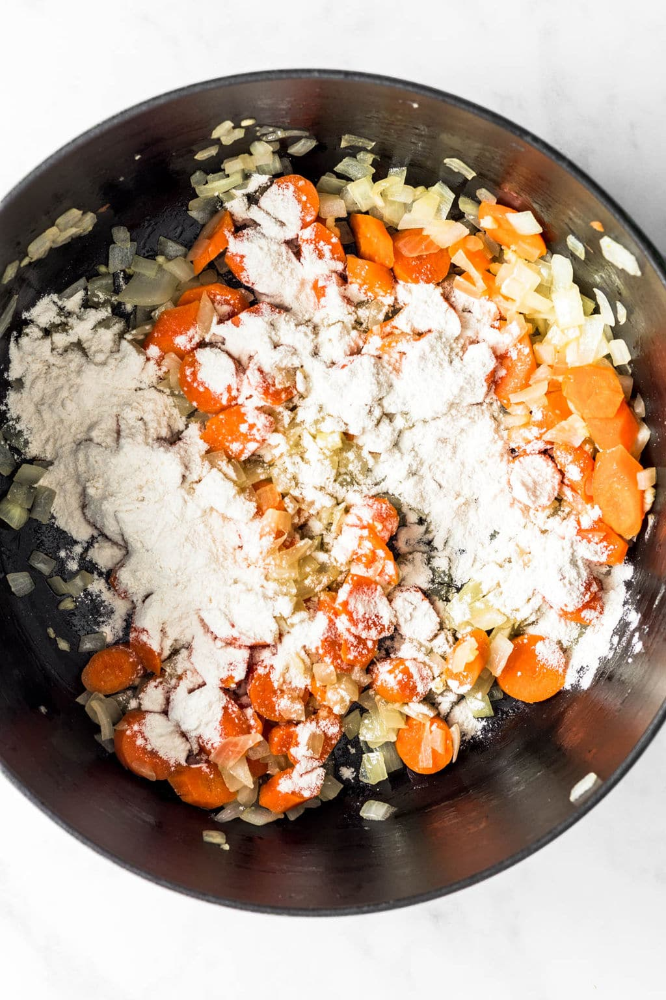
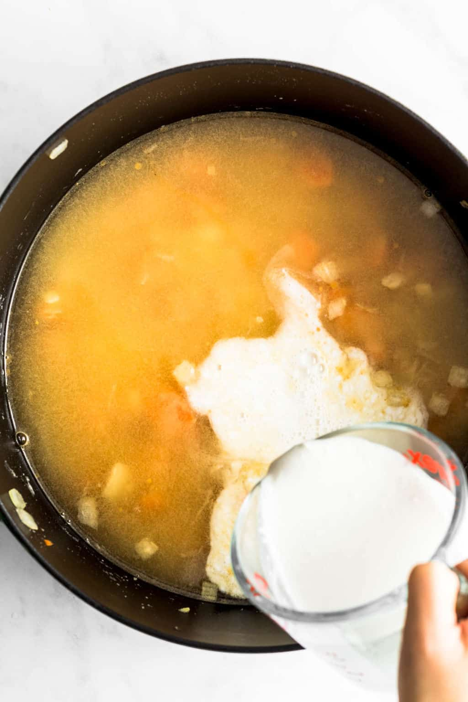
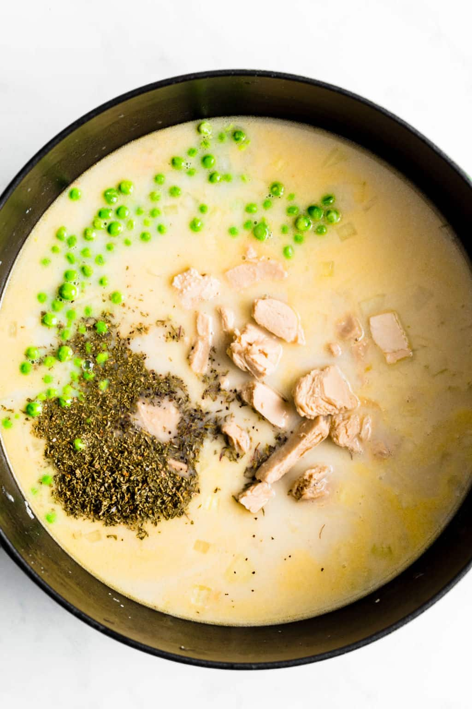
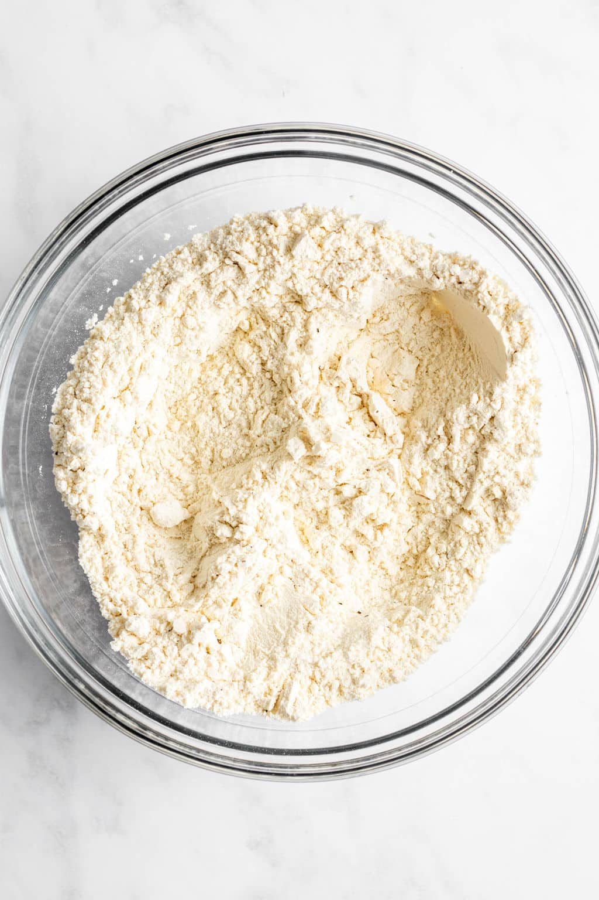
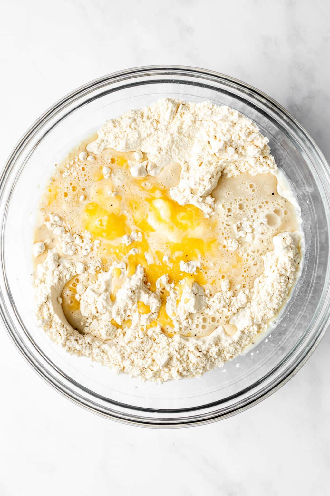
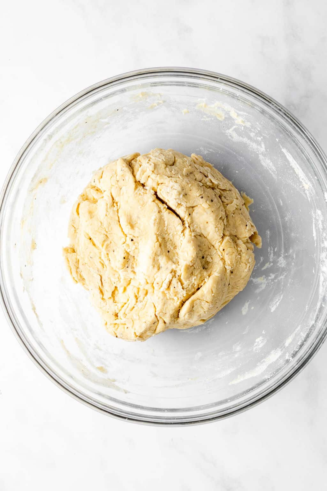
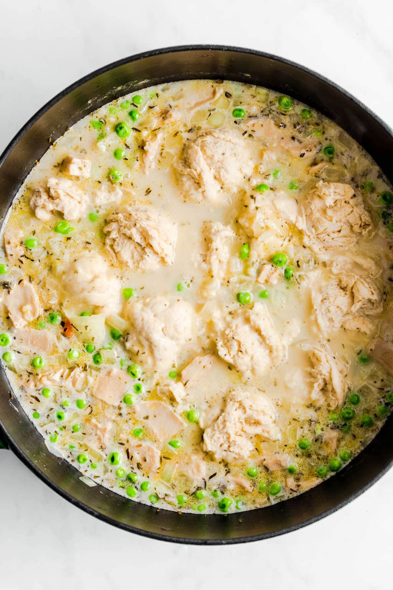

Comfort food doesn’t get much better than this Vegan Chicken and Dumplings recipe! Homemade dumplings simmered in a hearty vegan “chicken” soup are fluffy, tender, and savory. It’s so easy to make in one pot on the stove!
If you’re looking for the ultimate vegan comfort food for dinner tonight, turn to this Vegan Chicken and Dumplings recipe. It’s a one-pot dish made entirely on the stove with a hearty vegan “chicken” soup and homemade drop dumplings. You won’t believe how easy it is to put together!
The creamy soup is made with simple ingredients and my favorite homemade vegan “chicken”. Made from seitan, it has the most delicious meaty texture and savory flavor. You can easily make the “chicken” months ahead of time and keep it in your freezer so you can make chicken and dumplings whenever you want. You can also use your favorite store bought vegan chicken.
Creamy vegetable soup, vegan seitan chik’n, and fluffy soup dumplings are so great together. You’re going to want to keep this recipe in your back pocket for sick days, during winter, and when you’re craving a big bowl of comfort!
You can whip up the vegan chicken soup and homemade dumplings in a pinch. The entire recipe comes together easily in one pot on the stove:
Heat some olive oil in a large pot over medium heat. Saute the onion and carrots until softened, then add the garlic.
Pour the flour over the vegetables and stir to coat.
Add the broth and creamer to the pot. Stir until the mixture thickens a bit.
Now you can add the herbs and seasonings, green peas, and vegan “chicken”. Stir it all together and bring it up to a boil. Afterward, lower the heat and let it simmer while you prepare the dumplings.
Stir the flour, baking powder, salt, and black pepper together in a large bowl.
Make a well in the middle and add the milk and melted vegan butter.
 Scoop 2 tablespoons worth of dough out of the bowl and gently drop them right into the simmering chicken soup. The dough will expand a lot, so make sure they aren’t too big!
Place the lid on top of the pot and let the soup simmer until the dumplings are cooked through. Portion into bowls and enjoy!
This hands-on recipe is really fun to put together! If you want to save time and not make every element at once, follow these tips to make them ahead of time: